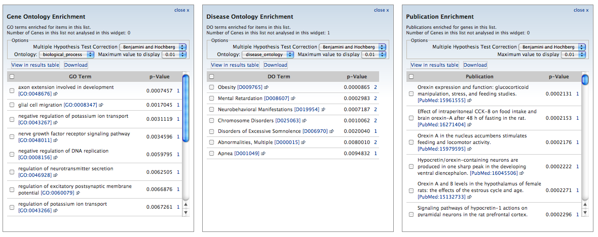
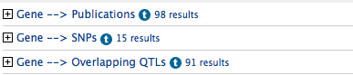

The list analysis page is a great way to find out more about a list of genes. A number of 'widgets' display graphs and tables to summarise the contents. These are interactive - click to see lists of genes in each category.
We plan to continually add more widgets and functionality to the list analysis page.
Template queries have been executed on the whole list, just like on the gene report page. This is a simple way to retrieve further information about the entire list. For example, you could retrieve all the SNPs or QTLs that are associated with these genes.
